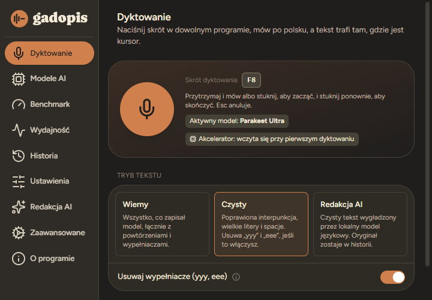

Prywatnie
Mowa zamienia się w tekst na Twoim komputerze. Bez chmury, bez konta, bez śledzenia. Internet jest potrzebny do pobrania modelu i aktualizacji.
Darmowa beta · Windows 10 i 11
Działa w Wordzie, przeglądarce, ChatGPT i wszędzie, gdzie piszesz. Naciskasz F8, mówisz, a tekst pojawia się tam, gdzie jest kursor. Wszystko dzieje się na Twoim komputerze.
Wersja beta
Mowa zamienia się w tekst na Twoim komputerze. Bez chmury, bez konta, bez śledzenia. Internet jest potrzebny do pobrania modelu i aktualizacji.
Działa wszędzie, gdzie można pisać: Word, przeglądarka, ChatGPT, Discord, Messenger. Przytrzymaj F8 albo stuknij raz, żeby zacząć.
Modele z najlepszymi wynikami dla polskiego, polskie znaki, kropki i przecinki. Tryb „czysty” usuwa „yyy” i „eee”.
Na karcie GTX 1080 Ti minuta mowy zamienia się w tekst w niecałe dwie sekundy. Bez karty działa na procesorze, tylko wolniej.
Pobierz instalator i wybierz zwykłą instalację. Nie potrzebujesz uprawnień administratora.
Kreator pierwszego uruchomienia dobierze model do Twojego komputera i sam go pobierze.
Kliknij w pole tekstowe, naciśnij F8, powiedz zdanie i naciśnij F8 jeszcze raz. Albo przytrzymaj F8, póki mówisz. Tekst wklei się sam.
W oknie programu wybierasz model i tryb tekstu. Potem możesz je zamknąć: Gadopis zostaje w tle, a F8 działa w każdym programie.

Gadopis zamienia na tekst także gotowe nagrania. Przeciągnij plik na okno programu, a tekst pojawi się w historii. Więcej: transkrypcja nagrań na tekst krok po kroku i automatyczne napisy do filmu.
Wywiad, wykład, notatka głosowa albo film: MP3, M4A, WAV, FLAC, MP4 i MOV. Długie nagrania program sam dzieli na części.
Zaznacz „Napisy do filmu (.srt)”, a dostaniesz napisy z czasami, w UTF-8 z polskimi znakami. Plik zapisuje się obok filmu, więc odtwarzacz wczyta go sam.
Nagranie nie opuszcza komputera. Nie ma limitu minut ani kolejki na serwerze, a gotowy tekst skopiujesz z historii.
Wszystkie wersje są darmowe. Windows 10 lub 11, 64-bit.
Zalecany
Zwykła instalacja z menu Start i deinstalatorem albo wersja przenośna do wyboru. Model pobierze się przy pierwszym uruchomieniu.
Pobierz instalator 16 MB
Jeden folder z modelami w środku. Rozpakuj, uruchom
Gadopis.exe i dyktuj bez internetu.
Najmniejsza paczka. Model wybierzesz i pobierzesz w programie.
Pobierz ZIP 31 MBProgram nie jest jeszcze podpisany certyfikatem, więc Windows SmartScreen może go zatrzymać. Kliknij „Więcej informacji”, a potem „Uruchom mimo to”. Sumy kontrolne plików są w SHA256SUMS.txt.
Gadopis jest w fazie testów i za darmo. Coś może jeszcze nie działać tak, jak powinno. Jeśli trafisz na problem albo masz pomysł, napisz: każde zgłoszenie pomaga.
Zgłoś problem albo pomysłTak. Wersja beta jest całkowicie darmowa, bez konta i bez reklam. Na dole tej strony i w zakładce O programie jest tylko odnośnik do innego projektu autora.
Dyktowanie w Windows 11 zna polski, ale działa tylko z internetem: mowa trafia do usług Microsoftu. Windows 10 nie dyktuje po polsku wcale. Gadopis rozpoznaje mowę na Twoim komputerze, także bez internetu, w Windows 10 i 11. Porównanie z innymi programami: programy do dyktowania po polsku.
Tak, na Windows 10 i 11 w wersji 64-bitowej. Na Windows 10 to prosty sposób na dyktowanie po polsku, bo wbudowane dyktowanie tego systemu nie obsługuje polskiego. Szczegóły i porównanie: dyktowanie po polsku w Windows 10 i 11.
Nie. Rozpoznawanie mowy działa na Twoim komputerze. Program łączy się z internetem, gdy pobierasz model albo aktualizację, i raz dziennie sprawdza na GitHubie, czy jest nowa wersja (można to wyłączyć). Nie ma telemetrii. Historię dyktowania możesz wyłączyć albo usunąć jednym przyciskiem.
Program działa na Twoim komputerze i nie wysyła nagrań. Opiera się na otwartym projekcie Handy, a pliki pobierasz prosto z GitHuba. Ich sumy kontrolne są w SHA256SUMS.txt. Program nie jest jeszcze podpisany certyfikatem, dlatego przy pierwszym uruchomieniu Windows może pokazać ostrzeżenie SmartScreen.
Program sam sprawdza, czy jest nowa wersja. Gdy jest, na dole okna pojawi się „Zaktualizuj do …”: kliknij, potwierdź i po chwili Gadopis uruchomi się w nowej wersji.
Wszędzie, gdzie można wpisać tekst: Word, przeglądarka, ChatGPT, Discord, Messenger, Teams, VS Code. Wyjątek to okna uruchomione jako administrator: tam Windows nie pozwala wkleić tekstu, ale znajdziesz go w historii programu. W Wordzie działa w każdej wersji, także 2016 i 2019: dyktowanie w Wordzie po polsku.
Tak. W zakładce Historia zaznacz „Napisy do filmu (.srt)” i przeciągnij film na okno programu. Po transkrypcji kliknij ikonę napisów przy wpisie: plik .srt zapisze się obok filmu, więc odtwarzacz wczyta go sam.
Tak, po pobraniu modelu. Wersja przenośna z modelami działa bez internetu od pierwszego uruchomienia.
Na wielu laptopach F8 to klawisz multimedialny. Naciśnij Fn+F8 albo zmień skrót w ustawieniach programu.
Na otwartym projekcie Handy (licencja MIT) i silniku transcribe.cpp. Modele mowy pochodzą od OpenAI (Whisper) i NVIDIA (Parakeet). Licencje są w folderze LICENSES w każdej paczce.